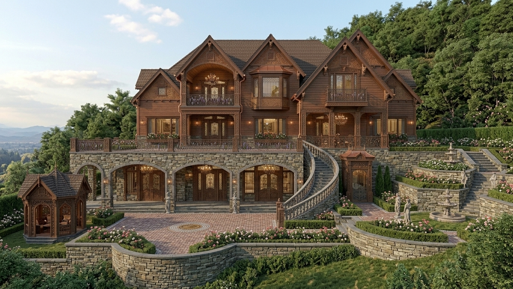
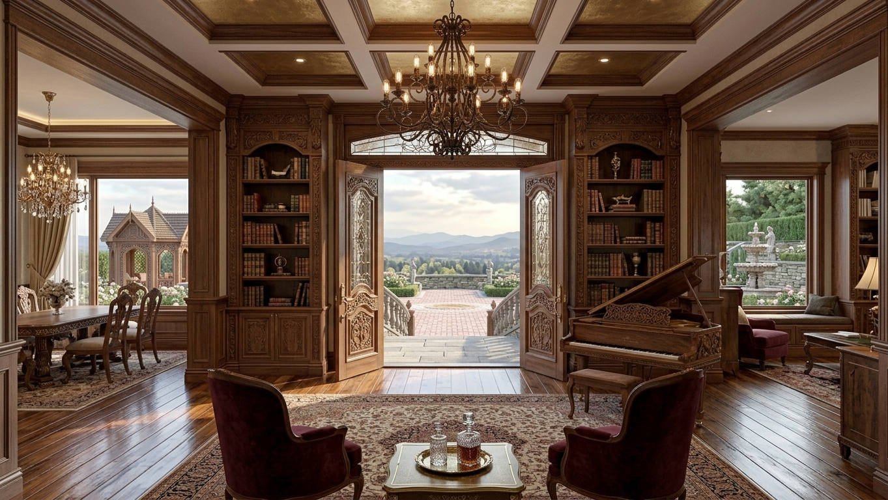

Custom Home · Rustic & Ornate · 2025
A rustic custom home built for gathering and escape — hand-hewn timber, natural stone, and richly detailed interiors. The Getaway is a study in contrast: rugged materials shaped with precision, and ornament that rewards a second look.
Northern Michigan
3,800 sq ft · 4 bedrooms · 3.5 baths
2025
Full architectural design & builder coordination
Exterior, interior, and detail views.


The Getaway was designed for a family who wanted a place to truly disconnect — a weekend and summer retreat deep in the woods of Northern Michigan. The brief was simple: it should feel like a cabin, but it should be anything but simple. The result is a home that pairs the raw honesty of rustic materials with the kind of detail work usually reserved for formal architecture.
Hand-hewn timber framing, locally quarried stone, and reclaimed barn wood anchor the home in its landscape. Inside, the craftsmanship takes over: intricate millwork, hand-forged iron hardware, carved corbels, and a great room fireplace framed in stacked stone with a custom mantle. Every surface rewards a closer look — from the beaded paneling to the turned stair balusters and the copper range hood.
The home is organized for gathering, with a great room that opens to a screened porch and fire pit beyond, and a quiet wing for bedrooms that feels like a retreat within a retreat. Ornate details — stained-glass accents, patterned tile, and layered lighting — bring warmth and richness to the rugged shell. Every space was modeled in BIM and reviewed in 3D with the clients before a single board was cut.